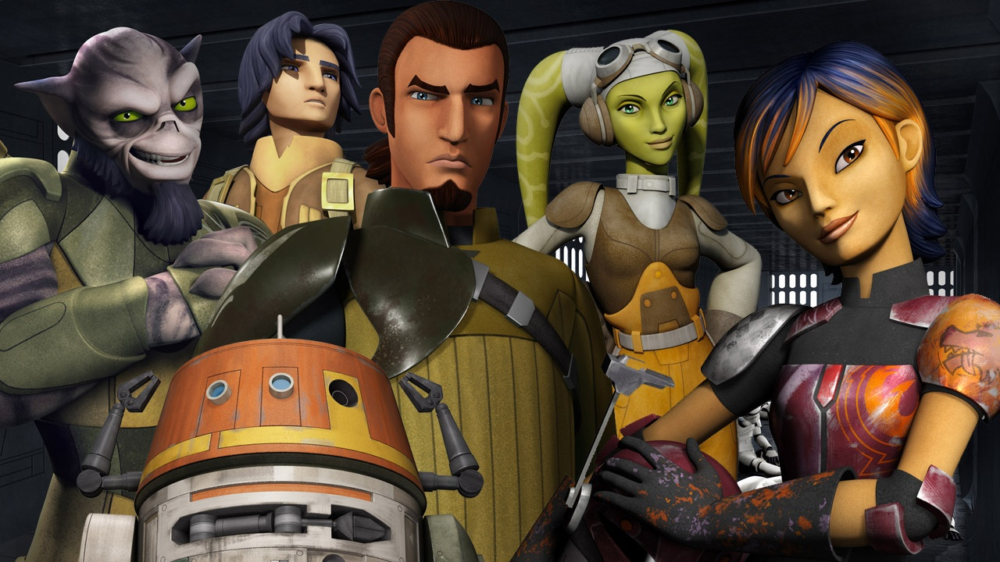

About Chopper
Chopper (C1-10P) is a snappy but loyal droid. He is a core member of The Ghost Crew which aided the rebellion against the Galactic Empire.
Chopper and his Friends
Chopper's Characteristics
- He's got a sarcastic sense of humor!
- He's a genius C1 astromech.
- He's loyal to Ghost Crew, his family.
Chopper's Friends
Chopper has some amazing friends. He is especially close to Hera Syndulla, the Twi'lek pilot that saved him during the Clone Wars. Click on the links below to read more about the members of The Ghost Crew.